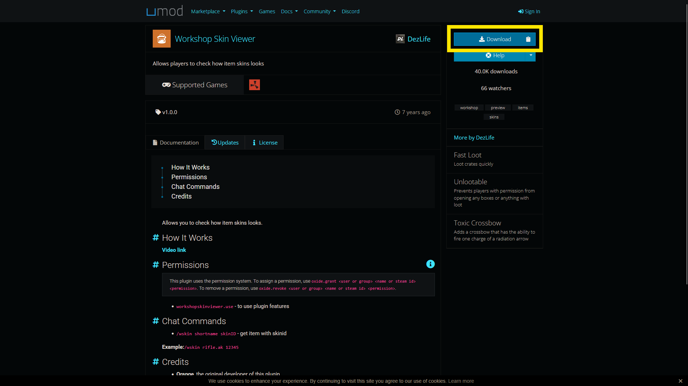
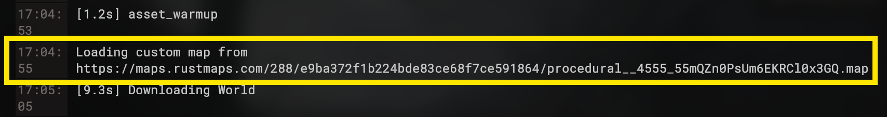

Everything is installed automatically by
setup.bat. You only have to run it once.
Download SteamCMD and the Rust dedicated server files.
setup.batSetup finished!,
press any key to close the window.
Your batch files are stored inside
rust_server.
RustServer/ ├── guide/ ├── setup.bat ├── steamcmd/ └── rust_server/ ├── start_server.bat # Start your Server. ├── update_oxide.bat # Install/update oxide. ├── select_version.bat # Switch between branches (main, staging, beta, ...). └── server_files/ # Your server files.
update_oxide.bat.
See Chapter 4 → Oxide
for more information.
Once the setup is finished, choose how you want to continue.
You can start immediately or configure the server first.
Launch the server and wait until it finishes loading.
rust_server folderConnect locally using the Rust F1 console.
client.connect localhost
Give your player server administrator permissions.
Fill in your information once, then copy the generated commands.
Enter the Steam information used by the commands below.
Give yourself Rust server administrator permissions.
server console.
ownerid YOUR_STEAMID64 YOUR_STEAM_USERNAME
server.writecfg
Check Oxide and configure its administrator group.
oxide.version
oxide.grant group admin *
oxide.grant user YOUR_STEAM_USERNAME *
oxide.usergroup add YOUR_STEAM_USERNAME admin
Configure your server after the basic installation. Choose what you want to change below.
quit.
Install the modding framework required for Rust plugins.
update_oxide.bat.
Add plugins to extend your Rust server with new features.
/oxide/plugins is missing, make sure
oxide is installed, and make sure to boot the server once
with oxide installed, oxide will then generate it's own
files..cs files that add new features
or commands to your Rust server.
They require Oxide to be installed.

.cs file.
rust_server/server_files/oxide/plugins/
.cs file directly inside
the plugins folder.
oxide/logs/ folder.
rust_server/server_files/oxide/plugins/Switch between the Main, Staging and Beta branches.
select_version.bat.
The normal public Rust version. This is the standard choice for a regular server.
The upcoming Rust version used for testing before changes reach the public branch.
Enter the name of a public beta branch when prompted by the script.
Enter the branch name and its password when prompted by the script.
Close the menu without changing anything.
update_oxide.bat again afterwards.
Changing branches can overwrite Oxide files.
Change how the server starts and which map it loads.
start_server.bat should look like this:
@echo off
cd ./server_files/
RustDedicated.exe ^
-batchmode ^
+server.level "Procedural Map" ^
+server.seed 2147483647 ^
+server.worldsize 1000 ^
+server.maxplayers 10
Let Rust generate a map automatically using a seed and world size.
+server.level "Procedural Map"
+server.seed 2147483647
+server.worldsize 1000
Use an existing Rust custom map instead of generating a procedural map.

.map file, put it in your
start_server.bat.
+server.levelurl "https://maps.rustmaps.com/288/e9ba372f1b224bde83ce68f7ce591864/procedural__4555_55mQZn0PsUm6EKRCl0x3GQ.map"
+server.level
+server.seed
+server.worldsize
+server.levelurl
instead.
Everything related to the actual Rust server
is stored inside server_files.
The server executable and its data are stored here.
rust_server/ └── server_files/ ├── RustDedicated.exe ├── RustDedicated_Data/ ├── server/ └── oxide/ ├── plugins/ ├── config/ ├── data/ └── logs/
The files you will interact with most often.
Starts the Rust dedicated server using your configured settings.
Installs or updates Oxide after Rust updates.
Switches between Rust server branches.
The main executable used to run the dedicated server.
A few things to keep in mind when browsing the files.
server_files.server_files.